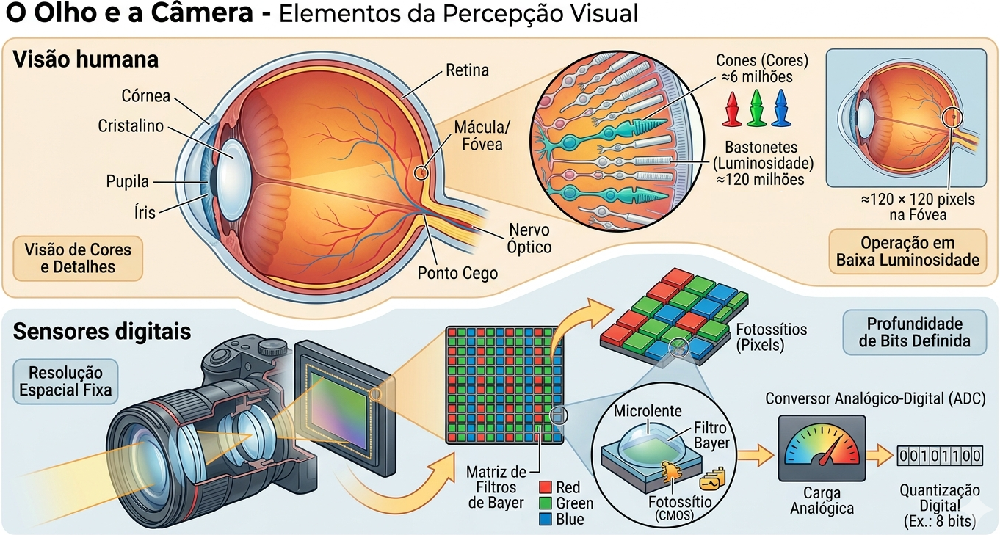
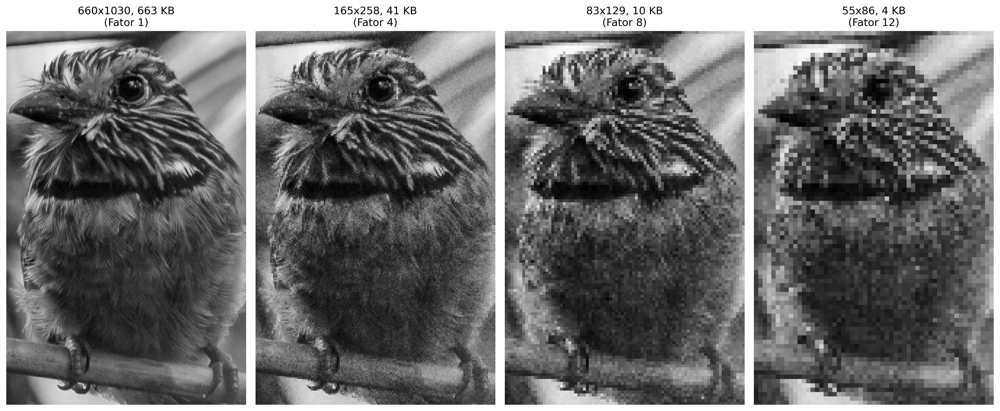
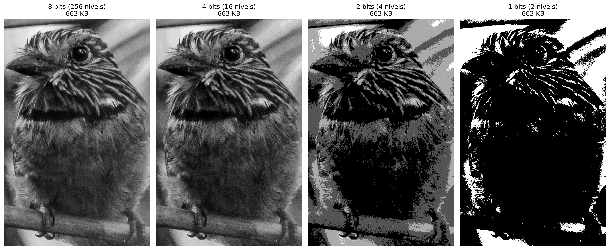
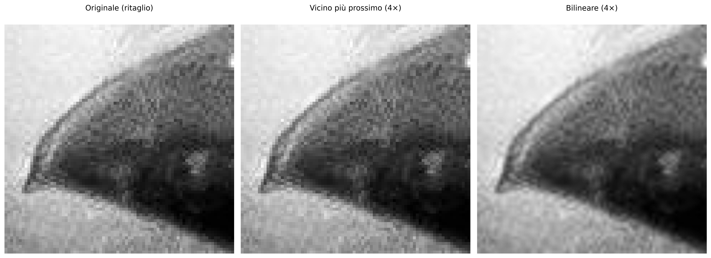
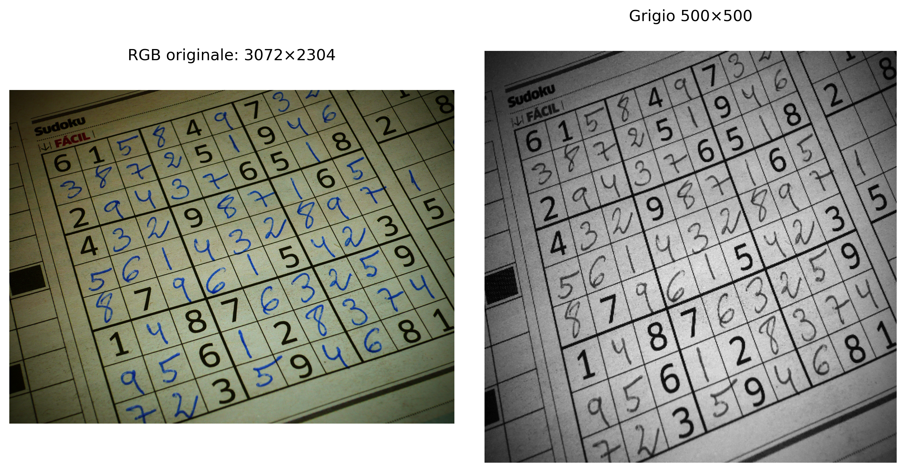
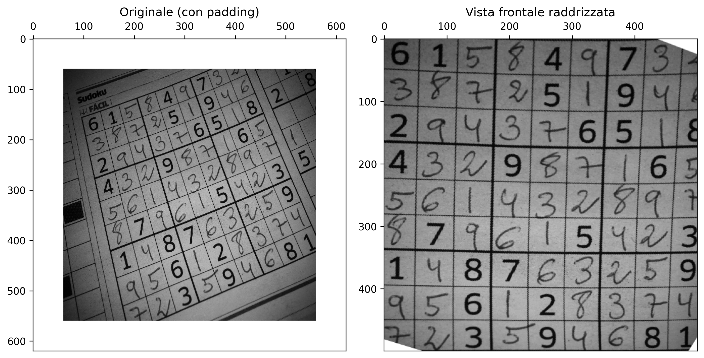

2Dalla Cattura al Pixel - Campionamento, Quantizzazione e Connettività
Questo capitolo approfondisce la comprensione dell’immagine digitale, passando dalla natura fisica della cattura alla sua rappresentazione matematica discreta. Indaghiamo come la luce diventa dato e come l’organizzazione spaziale dei pixel definisce le relazioni di vicinanza e connettività essenziali per algoritmi avanzati di Visione Artificiale (VC).
2.1 Obiettivi
Al termine di questo capitolo, sarai in grado di:
Spiegare il modello fisico della formazione dell’immagine basato su illuminazione e riflettanza.
Distinguere i meccanismi della visione umana da quelli dei sensori digitali.
Comprendere i processi di campionamento (discretizzazione dello spazio) e quantizzazione (discretizzazione dell’intensità).
Descrivere le relazioni topologiche tra pixel: vicinanza, adiacenza, connettività e distanze.
Eseguire trasformazioni geometriche di base (traslazione, rotazione, scala) preservando la qualità.
Visualizzare in pratica gli effetti della variazione della risoluzione spaziale e della profondità di bit.
2.2 L’Occhio e la Fotocamera - Elementi della Percezione Visiva
La formazione di un’immagine digitale inizia con la cattura della luce riflessa dagli oggetti. Come illustrato nella Figura 2.1, sia l’occhio umano che le fotocamere digitali seguono principi ottici simili per mettere a fuoco la luce su una superficie sensibile, sebbene utilizzino meccanismi biologici ed elettronici distinti per la trasduzione del segnale.
2.2.1 Visione umana
L’occhio funziona come un sistema ottico complesso: la luce attraversa la cornea, l’umor acqueo, la pupilla (controllata dall’iride) e il cristallino — che regola dinamicamente la messa a fuoco — fino a raggiungere la retina. Sulla retina si trovano i fotorecettori: i coni (≈6 milioni), concentrati nella fovea, sono responsabili della visione dei colori e dei dettagli, mentre i bastoncelli (≈120 milioni) garantiscono la visione in condizioni di bassa luminosità (visione scotopica), rilevando solo intensità di grigio. Il punto cieco è la regione da cui origina il nervo ottico, priva di recettori.
2.2.2 Sensori digitali
Nelle fotocamere, i sensori di immagine svolgono il ruolo della retina. I due tipi più comuni sono il CCD (Charge-Coupled Device - Dispositivo a Carica Accoppiata) e il CMOS (Complementary Metal-Oxide-Semiconductor - Semiconduttore a Ossido Metallico Complementare). Il sensore è composto da una matrice di fotositi (pixel) che accumulano carica elettrica proporzionale alla luce incidente.
Per la ricostruzione dei colori, si utilizza il Filtro di Bayer, una matrice di filtri colorati che consente a ciascun pixel di catturare una sola componente cromatica: rosso, verde o blu (RGGB - Red, Green, Green, Blue). Successivamente, un ADC (Analog-to-Digital Converter - Convertitore Analogico-Digitale) quantizza questa carica in valori numerici, definiti da una profondità di bit (es.: 8 bit, che producono 256 livelli di intensità).
NotaCuriosità
Sebbene l’occhio umano abbia milioni di recettori, la risoluzione ad alta definizione è limitata alla fovea (visione centrale), equivalente a circa \(120 \times 120\) pixel. La percezione di una scena completa in alta risoluzione è il risultato di un intenso post-elaborazione svolto dal cervello.

Figura 2.1: Confronto didattico tra il sistema visivo biologico e quello elettronico: in alto, l’anatomia dell’occhio umano che evidenzia la retina e i fotorecettori (coni e bastoncelli); in basso, la struttura di una fotocamera digitale che dettaglia il sensore CMOS, la matrice di filtri di Bayer (RGGB) e il processo di quantizzazione digitale eseguito dall’ADC.
2.3 Illusioni Ottiche: Le Sfide della Percezione Visiva
Mentre i sensori digitali catturano l’intensità della luce in modo lineare e oggettivo, il sistema visivo umano interpreta la scena basandosi su contesto, esperienze pregresse e meccanismi biologici di sopravvivenza. Le illusioni ottiche non sono “errori” dell’occhio, ma evidenze dell’intenso post-elaborazione cerebrale svolto nella corteccia visiva.
2.3.1 Ambiguità e Contesto
Il cervello cerca costantemente di dare senso a pattern ambigui. Nell’esempio del Vaso di Rubin (vedi Figura 2.2), la percezione alterna tra la figura (vaso) e lo sfondo (due volti), dimostrando che non riusciamo a elaborare entrambe le interpretazioni simultaneamente. L’illusione dell’Elefante di Shepard, invece, gioca con la nostra incapacità di riconciliare linee di contorno che suggeriscono volume in posizioni logicamente impossibili.
2.3.2 Luminosità e Contrasto Locale
Molte illusioni derivano dall’inibizione laterale, meccanismo mediante il quale neuroni vicini nella retina competono tra loro per evidenziare i bordi. Nella Griglia Scintillante, punti scuri “fantasma” sembrano apparire alle intersezioni bianche a causa di questa elaborazione locale del contrasto.
L’illusione dell’Ombra sulla Scacchiera di Adelson è forse la più impressionante per la VC: il quadrato “A” e il quadrato “B” hanno esattamente lo stesso valore di grigio nel sensore (o nel file digitale), ma il cervello “corregge” la luminosità di “B” comprendendo che si trova sotto un’ombra proiettata, percependo quest’ultimo come più chiaro.
2.3.3 Geometria e Prospettiva
La percezione della profondità può essere ingannata da costruzioni geometriche che sfidano la logica tridimensionale da un particolare angolo di osservazione. La Scala di Schröder sfrutta l’ambiguità della prospettiva per creare un oggetto che sembra salire o scendere a seconda di come viene osservato, evidenziando come la nostra interpretazione di “sopra” e “sotto” dipenda dal punto di fuga.
Figura 2.2: Raccolta di sfide percettive: (in alto a sinistra) Vaso di Rubin — ambiguità figura-sfondo; (in alto al centro) Elefante di Shepard — incongruenza geometrica; (in alto a destra) Ombra di Adelson — costanza della luminosità basata sul contesto; (in basso a sinistra) Griglia di punti — inibizione laterale; (in basso a destra) Scala di Schröder.
2.4 Il Modello Matematico della Formazione dell’Immagine
Un’immagine può essere modellata come il prodotto di due funzioni:
\[
f(x,y) = i(x,y) \cdot r(x,y)
\tag{2.1}\]
dove:
\(i(x,y)\) è l’illuminazione incidente sulla scena (energia luminosa per unità di area), determinata dalla sorgente di luce;
\(r(x,y)\) è la riflettanza dell’oggetto (frazione di luce riflessa), determinata dalle proprietà ottiche della superficie, con \(0 < r(x,y) < 1\).
Nella pratica, le due componenti variano su scale spaziali distinte: \(i(x,y)\) tende a variare lentamente nello spazio, mentre \(r(x,y)\) può presentare variazioni brusche associate a trame, bordi e dettagli fini. Le tecniche di elaborazione delle immagini digitali (PDI) spesso cercano di separare o compensare queste componenti, come nei metodi di correzione dell’illuminazione non uniforme.
La Figura 2.3 illustra come questo modello si manifesti nelle immagini digitali a colori, rappresentate da molteplici canali spettrali (RGB) e, opzionalmente, da un canale aggiuntivo di trasparenza (RGBA).
2.4.1 Rappresentazione Digitale e Canali Spettrali
Nelle immagini digitali a colori, la funzione \(f(x,y)\) della Equazione 2.1 è rappresentata da molteplici canali spettrali. Nello standard RGB, ogni pixel memorizza tre campioni indipendenti:
dove \(A(x,y)\) rappresenta il canale alfa (Alpha), responsabile di codificare l’opacità del pixel. Per convenzione, il valore \(A = 0\) indica un pixel completamente trasparente, mentre \(A = 255\) (o \(1\)) rappresenta un pixel completamente opaco.
Pertanto, un’immagine digitale a colori è strutturata come una matrice multidimensionale di dimensioni:
RGB:\(M \times N \times 3\)
RGBA:\(M \times N \times 4\)
in cui ogni posizione \((x,y)\) memorizza i campioni associati alle proprietà ottiche di quella coordinata spaziale.
La conversione tra intervalli di intensità è diretta ed è data da:
\[f_{\text{norm}}(x,y) = \frac{f(x,y)}{255}\]
dove \(f(x,y) \in [0,\,255]\) e \(f_{\text{norm}}(x,y) \in [0,\,1]\).
Convenzione di scala tra librerie: Diversi ecosistemi di programmazione adottano intervalli di valori e ordinamenti distinti per rappresentare i canali digitali, come sintetizzato nella Tabella 2.1.
Tabella 2.1: Convenzioni di scala e ordine dei canali nelle principali librerie di PDI.
Libreria
Tipo predefinito
Intervallo di valori
Ordine delle bande
Forma dell’array/tensore
OpenCV
uint8
\([0, 255]\)
BGR
\(H \times W \times C\)
Pillow
uint8
\([0, 255]\)
RGB
\(H \times W \times C\)
NumPy
uint8/float32
\([0,255]\) o \([0,1]\)
—
\(H \times W \times C\)
scikit-image
float64
\([0{,}0,\;1{,}0]\)
RGB
\(H \times W \times C\)
PyTorch
float32
\([0{,}0,\;1{,}0]\)
RGB
\(C \times H \times W\)
TensorFlow/Keras
float32
\([0{,}0,\;1{,}0]\)
RGB
\(H \times W \times C\)
Trascurare queste discrepanze è una fonte frequente di errori nei flussi di lavoro di VC — come, ad esempio, iniettare un’immagine letta tramite OpenCV (standard BGR, tipo uint8) direttamente in un modello profondo di PyTorch che presuppone il formato RGB normalizzato.
2.4.2 Preparazione dell’Ambiente Pratico
Il blocco seguente carica il modulo morph.py dal repository e dimostra, per un pixel sintetico, le diverse convenzioni di scala e ordine dei canali adottate dalle principali librerie di elaborazione delle immagini (PDI).
2.4.3 Implementazione della Lettura delle Immagini in morph.py
Il frammento seguente mostra il codice sorgente della funzione mm.read, permettendo di verificare direttamente come la libreria morph.py implementa la lettura delle immagini.
import inspectprint(inspect.getsource(mm.read))
@staticmethod
def read(file, pil=False, grayscale=False):
"""Lê imagem (local, URL ou Google Drive) → PIL.Image, ndarray 2D ou RGB 3D."""
import re, requests
from PIL import Image
from io import BytesIO
from urllib.request import urlopen, Request
np = mm._get_np()
# — fonte: URL / Google Drive —
if isinstance(file, str) and file.startswith(("http://", "https://", "id=")):
m = re.search(r"id=([\w-]+)", file) or re.search(r"/d/([\w-]+)", file)
url = f"https://drive.google.com/uc?export=view&id={m.group(1)}" \
if m and ("id=" in file or "drive.google.com" in file) else file
hdr = {"User-Agent": "Mozilla/5.0 AppleWebKit/537.36 Chrome/124 Safari/537.36"}
try:
r = requests.get(url, headers=hdr, timeout=20)
if r.status_code == 429: raise requests.exceptions.HTTPError()
r.raise_for_status()
file = BytesIO(r.content)
except:
file = BytesIO(urlopen(Request(url, headers=hdr), timeout=20).read())
img = Image.open(file)
img.load()
if pil: return img
if grayscale: return np.array(img.convert("L")) # (H,W)
if img.mode == "L": return np.array(img) # (H,W)
if img.mode == "RGBA": # fundo branco
bg = Image.new("RGB", img.size, (255, 255, 255))
bg.paste(img, mask=img.split()[3])
return np.array(bg)
return np.array(img.convert("RGB")) # (H,W,3)
2.4.4 RGB e RGBA: Esempio Pratico con l’Immagine Mandrill
L’esempio seguente carica l’immagine Mandrill in formato RGB, costruisce artificialmente un canale alfa con gradiente orizzontale e visualizza entrambe le rappresentazioni, illustrando concretamente le strutture matriciali \(M \times N \times 3\) e \(M \times N \times 4\).
Figura 2.3: Immagine RGB (3 canali, \(M imes N imes 3\)) e versione RGBA (4 canali, \(M imes N imes 4\)) con trasparenza alfa graduale da sinistra a destra. Immagine Mandrill — USC SIPI Image Database (dominio pubblico).
2.5 Digitalizzazione: Campionamento e Quantizzazione
Per trasformare una scena continua in un’immagine digitale, sono necessari due processi: campionamento e quantizzazione.
2.5.1 Campionamento - Discretizzazione dello spazio
Il campionamento consiste nel misurare il valore della funzione \(f(x,y)\) in punti equispaziati, formando una matrice di \(M\) righe (altezza) e \(N\) colonne (larghezza). Ciascun elemento di questa matrice è un pixel. La risoluzione spaziale è data da \(M \times N\). Maggiore è la risoluzione, più dettagli spaziali vengono preservati, ma maggiore è anche il costo computazionale e di archiviazione.
La quantizzazione associa a ciascun pixel un valore numerico discreto, generalmente rappresentato da un intero di \(b\) bit. La profondità di bit definisce il numero di livelli di intensità: \(2^b\). Le immagini in scala di grigi utilizzano solitamente 8 bit (256 livelli). Le immagini a colori utilizzano tre canali da 8 bit (24 bit in totale).
Illustrazione: Se si utilizza solo 1 bit per pixel (bianco e nero), si perdono tutte le tonalità intermedie. Con 2 bit (4 livelli) si percepiscono già degradé grossolani. Con 8 bit, l’occhio umano difficilmente percepisce la discretizzazione (visione continua).
AvvisoErrore di quantizzazione
L’errore di quantizzazione è la differenza tra il valore analogico reale e il valore discreto attribuito. Si manifesta come rumore di quantizzazione, visibile in regioni con gradiente uniforme quando si utilizzano pochi bit.
2.5.3 Effetti del campionamento e della quantizzazione
Gli esperimenti che seguono mostrano come la riduzione della risoluzione spaziale (sottocampionamento) e della profondità di bit degradino la qualità visiva. Utilizzare il codice per esplorare diversi fattori e livelli di grigio.
# Immagine di esempio (barbuto-striato) — base delle figure di campionamento,# quantizzazione e trasformazioni geometriche di questo capitolo.base ="https://upload.wikimedia.org/wikipedia/commons"arquivo = ("Area_de_Prote%C3%A7%C3%A3o_Ambiental_""Quilombos_do_M%C3%A9dio_Ribeira_-_Thomas-""Fuhrmann_%282023-_02%29_Malacoptila_striata.jpg")url =f"{base}/c/c5/{arquivo}"caminho ="imagens/barbudo-rajado.jpg"ifnot os.path.exists(caminho): os.makedirs("imagens", exist_ok=True) mm.write(mm.read(url), caminho)img_color = mm.read(caminho)img_gray0 = mm.gray(img_color)img_gray = mm.crop(img_gray0, 820, 1850, 890, 1550) # ritaglio per vedere i dettagliprint(f"Immagine originale: {img_color.shape}")
Immagine originale: (3067, 2047, 3)
import numpy as np# Rilettura come oggetto PIL per l'accesso ai metadati EXIF (solo Python).img_pil = mm.read(caminho, pil=True) # restituisce l'immagine PIL con EXIFimg_numpy = np.array(img_pil)exif = img_pil._getexif() # ora funziona — img_pil è un'immagine PILprint(f"Tipo dell'immagine: {type(img_color)}")
Tipo dell'immagine: <class 'numpy.ndarray'>
L’esperimento presentato in Figura 2.4 illustra il compromesso tra la risoluzione spaziale e il costo di archiviazione in memoria. Il codice utilizza la tecnica di sottocampionamento per fette (slicing) per ridurre la matrice originale di pixel secondo un fattore \(f\), risultando in un risparmio di memoria — ad esempio, un fattore \(f=8\) riduce la dimensione del dato di 64 volte (\(8^2\)). Per fini di confronto visivo, le immagini ridotte vengono ripristinate alle dimensioni originali (\(512 \times 512\)) tramite l’interpolazione per vicino più prossimo (nearest). Questo processo non recupera l’informazione persa, ma rende evidente l’effetto di aliasing e la struttura a blocchi (pixelizzazione) generata dalla bassa densità di dati della matrice campionata.
def subsample_simple(image, f):# Sottocampionamento tramite affettamento (slicing) reduced = mm.subsample(image, f)# Calcolo della memoria in KB mem_kb = reduced.nbytes /1024 label =f"{reduced.shape[1]}x{reduced.shape[0]}, {int(mem_kb)} KB\n(Fator {f})"# Ripristina la dimensione per la visualizzazione (H, W originali) res = mm.resize(reduced, (image.shape[1], image.shape[0]), method='nearest')return res, labelfactors = [1, 4, 8, 12]# Genera i risultati e li separa in liste per mm.showresults = [subsample_simple(img_gray, f) for f in factors]imgs_list = [r[0] for r in results]titles_list = [r[1] for r in results]mm.show(imgs_list, titles=titles_list, cols=4, figsize=(16, 12))

Figura 2.4: Effetto del sottocampionamento. I titoli mostrano le dimensioni (W x H) e la dimensione della matrice in memoria (KB).
L’esperimento in Figura 2.5 si concentra sulla quantizzazione dell’intensità, il processo di discretizzazione dell’ampiezza della funzione \(f(x,y)\). Mentre il sottocampionamento influisce sulla griglia spaziale, la riduzione della profondità di bit limita la quantità di livelli di grigio disponibili per rappresentare la luminosità.
Riducendo la profondità da 8 bit (256 livelli) a valori inferiori, emerge l’effetto di posterizzazione, in cui i gradienti morbidi di una scena vengono sostituiti da transizioni brusche. Al limite di 1 bit, l’immagine diventa strettamente binaria, preservando solo la silhouette e perdendo i dettagli di texture e volume.
def quantize_simple(image, bits):"""Riduce la profondità di bit e calcola i metadati di memoria.""" levels =2** bits# Normalizzazione e quantizzazione uniforme quantized = (np.floor(image /256* levels) / levels *255).astype(np.uint8)# Calcolo della memoria in KB mem_kb = quantized.nbytes /1024 label =f"{bits} bits ({levels} níveis)\n{int(mem_kb)} KB"return quantized, label# Lista di bit per il test (8 è il valore predefinito, 1 è il binario)bits_test = [8, 4, 2, 1]# Genera i risultati e li separa in liste per mm.showresults_q = [quantize_simple(img_gray, b) for b in bits_test]imgs_q = [r[0] for r in results_q]titles_q = [r[1] for r in results_q]mm.show(imgs_q, titles=titles_q, cols=4, figsize=(16, 12))

Figura 2.5: Effetto della riduzione della profondità di bit. I titoli mostrano il numero di bit, i livelli e la dimensione in memoria (KB).
2.5.4 Analisi Tecnica
Dominio vs. Codominio: Si noti che la risoluzione spaziale (dimensioni della matrice) rimane costante a 512x512; ciò che cambia è solo il codominio della funzione dell’immagine.
Costanza della Memoria: Si osservi nei titoli che la dimensione in KB non diminuisce. Ciò accade perché NumPy memorizza ogni pixel quantizzato in un contenitore a 8 bit (uint8), indipendentemente dal fatto che il valore reale sia solo 0 o 1.
Percezione: Il degrado visivo diventa critico al di sotto di 4 bit, dove l’occhio umano inizia a percepire i “confini” artificiali creati dalla mancanza di tonalità intermedie.
La limitazione dei tipi di dati più piccoli di un byte nell’ecosistema Python/NumPy è dovuta all’architettura hardware, che indirizza la memoria in blocchi di 8 bit (byte). Per mantenere la compatibilità con OpenCV e garantire l’efficienza, anche gli elementi binari vengono mappati in contenitori da 1 byte (uint8 o bool8).
Sebbene linguaggi come l’ANSI C consentano la compressione di 8 pixel per byte (bit-packing), tale approccio richiede una decompressione costante per i calcoli e impone un’elevata complessità nella gestione dei puntatori. Come indicato in Tabella 2.2, si privilegia l’uso di uint8 per la facilità di accesso ai vicini e per la versatilità nelle trasformazioni geometriche. Inoltre, i metodi nativi di NumPy e OpenCV eseguono l’elaborazione internamente a basso livello (C/C++), rendendo le operazioni vettorizzate più rapide rispetto alle implementazioni manuali con cicli annidati in Python.
Tabella 2.2: Confronto tra strategie di compressione ed efficienza di elaborazione.
Caratteristica
Python (NumPy/OpenCV)
ANSI C (Bit-packing)
Unità minima
1 Byte (8 bit)
1 Bit
Memoria (binaria)
256 KB (per 512x512)
32 KB (per 512x512)
Velocità
Elevata (Vettorizzazione in C)
Variabile (Lenta in caso di bit-shift)
Complessità
Bassa: Metodi pronti
Alta: Puntatori e Maschere
2.6 Relazioni tra Pixel - Topologia dell’Immagine
I pixel non sono elementi isolati; le loro posizioni relative definiscono concetti importanti per l’elaborazione.
2.6.1 Vicinato
Dato un pixel di coordinate \((x,y)\), si definiscono due tipi principali di vicinato (per immagini su \(grid\) rettangolare):
Vicinato-4 (von Neumann): include i pixel nelle posizioni \((x-1,y)\), \((x+1,y)\), \((x,y-1)\), \((x,y+1)\).
Vicinato-8 (Moore): include tutti gli otto pixel adiacenti (aggiunge i quattro diagonali).
La scelta del vicinato influenza operazioni come il rilevamento dei bordi, il calcolo dei gradienti e la connettività.
# # Creazione di una matrice 3x3 per esempio topologico# viz = np.zeros((3, 3), dtype='uint8')# # Definizione della Vicinanza-4 (N4) con valore diverso per evidenziazione# viz[0, 1] = viz[2, 1] = viz[1, 0] = viz[1, 2] = viz[1, 1] = 255# ovvero semplicemente (prova con numeri come argomenti):viz = mm.secross()# Visualizzazione della matrice per l'analisi delle coordinatemm.drawImgPlt(viz, scale=40)
Figura 2.6: Illustrazione delle vicinanze 4 in una matrice 3x3. Al centro (1,1), il pixel di interesse.
import importlibimport morphimportlib.reload(morph)from morph import mm
2.6.2 Adiacenza, connettività e percorsi
Due pixel sono adiacenti se sono in contatto secondo un intorno definito e soddisfano un criterio di valore (es.: stesso livello di intensità). Una connettività definisce una relazione di equivalenza tra pixel che formano una regione connessa. Un percorso è una sequenza di pixel adiacenti.
La connettività-4 (N4) e la connettività-8 (N8) possono produrre risultati differenti nella segmentazione e nel calcolo delle componenti connesse (etichettatura). Ad esempio, un motivo a scacchiera può essere completamente sconnesso in N4, ma totalmente connesso in N8.
2.6.3 Distanze tra pixel
Le metriche di distanza sono fondamentali per quantificare la prossimità fisica e la connettività tra gli elementi che compongono la griglia digitale. Come dimostrato nella Tabella 2.3, la scelta della metrica definisce il costo di spostamento tra pixel e altera il comportamento degli algoritmi di segmentazione e di analisi morfologica.
Per misurare la distanza tra due pixel \(p(x_1, y_1)\) e \(q(x_2, y_2)\), si utilizzano diverse funzioni metriche che impongono vincoli di movimento distinti sulla griglia:
Tabella 2.3: Confronto tra metriche di distanza applicate alla maglia di pixel.
Metrica
Definizione
Interpretazione
Euclidea
\(\sqrt{(x_1-x_2)^2 + (y_1-y_2)^2}\)
Distanza esatta in linea retta (continua)
Manhattan (City block)
\(|x_1-x_2| + |y_1-y_2|\)
Movimenti orizzontali + verticali
Chebyshev (Scacchiera)
\(\max(|x_1-x_2|, |y_1-y_2|)\)
Maggiore spostamento tra gli assi
Queste distanze sono applicate in diversi contesti di PDI, inclusi algoritmi di interpolazione geometrica, trasformate della distanza, crescita di regioni e analisi delle forme.
NotaEsempio pratico
Considerando due pixel con spostamenti relativi \(\Delta x = 3\) e \(\Delta y = 4\):
Euclidea: \(\sqrt{3^2 + 4^2} = 5\) (ipotenusa del triangolo rettangolo).
Manhattan: \(3 + 4 = 7\) (somma dei cateti).
Chebyshev: \(\max(3, 4) = 4\) (predominio dello spostamento maggiore).
2.7 Archiviazione delle Immagini
La scelta del formato di file rappresenta un passo decisivo nel flusso di elaborazione, poiché determina come i dati di campionamento e quantizzazione verranno preservati o scartati. Come presentato in Tabella 2.4, ciascuna estensione bilancia in modo distinto la fedeltà dei dati e l’efficienza di archiviazione.
Tabella 2.4: Principali formati di archiviazione delle immagini digitali e le loro applicazioni nell’elaborazione digitale delle immagini (PDI).
Formato
Caratteristiche
Uso tipico
PGM
Formato semplice di mappa dei grigi (testo o binario).
Ricerca accademica e strumenti Unix.
BMP
Non compresso (o compressione semplice).
Windows, applicazioni legacy.
PNG
Compressione senza perdita (lossless).
Web, immagini con trasparenza.
JPEG
Compressione con perdita (lossy), ideale per fotografie.
Foto, fotocamere digitali.
TIFF
Supporta più livelli e compressione variabile.
Editoria, archiviazione.
RAW
Dati grezzi del sensore, senza elaborazione.
Fotografia professionale.
DICOM
Standard medico con metadati clinici incorporati (paziente, apparecchiatura, protocollo).
Radiologia, tomografia, risonanza magnetica.
I metadati di un’immagine includono parametri quali larghezza, altezza, profondità di bit e codifica del colore. Nei formati scientifici vengono preservate anche le informazioni di calibrazione e i dettagli dell’acquisizione. Utilizzando la funzione mm.read(), la libreria morph preserva automaticamente questi dati affinché vengano rispettate le proprietà originali dell’immagine.
In contesti scientifici e ospedalieri, si privilegia lo standard DICOM (Digital Imaging and Communications in Medicine) per garantire l’assenza di perdita di precisione diagnostica. Repository pubblici come The Cancer Imaging Archive (TCIA), la Alzheimer’s Disease Neuroimaging Initiative (ADNI) e PhysioNet mettono a disposizione vasti set di dati in questo formato, inclusi metadati clinici anonimizzati essenziali per la ricerca scientifica.
2.7.1 Esempio: Estrazione di Metadati e Localizzazione GPS
A differenza della matrice di pixel pura ottenuta dalla lettura convenzionale — come nell’immagine dell’uccello presentata all’inizio di questo capitolo —, l’uso dell’argomento pil=True nel metodo mm.read() altera la natura dell’oggetto restituito (vedere Figura 2.7). Mentre il comportamento predefinito (pil=False) restituisce un numpy.ndarray RGB, la lettura con pil=True restituisce un oggetto specializzato della libreria Pillow, in grado di interpretare l’intestazione EXIF.
L’intestazione EXIF (Exchangeable Image File Format) funziona come un archivio tecnico della cattura, consentendo all’oggetto Pillow di interpretare un’ampia gamma di informazioni che vanno ben oltre le coordinate GPS. Utilizzando pil=True, il sistema acquisisce accesso al “DNA” dell’immagine, inclusi metadati hardware (marca e modello della fotocamera), impostazioni ottiche (apertura, lunghezza focale e tempo di esposizione) e parametri di illuminazione (uso del flash e bilanciamento del bianco).
Questa distinzione è importante nell’elaborazione digitale delle immagini (PDI), poiché trasforma la matrice di campionamento in un insieme di dati contestualizzato, dove le caratteristiche fisiche del sensore e dell’obiettivo possono essere utilizzate per normalizzare le luminosità o correggere distorsioni geometriche.
from PIL.ExifTags import TAGSimport os, numpy as npbase ="https://upload.wikimedia.org/wikipedia/commons"arquivo = ("Area_de_Prote%C3%A7%C3%A3o_Ambiental_""Quilombos_do_M%C3%A9dio_Ribeira_-_Thomas-""Fuhrmann_%282023-_02%29_Malacoptila_striata.jpg")url =f"{base}/c/c5/{arquivo}"caminho ="imagens/barbudo-rajado.jpg"# 1. Lettura — preserva oggetto PIL con EXIFifnot os.path.exists(caminho): os.makedirs("imagens", exist_ok=True) img_obj = mm.read(url, pil=True) mm.write(img_obj, caminho) # salva preservando EXIFelse: img_obj = mm.read(caminho, pil=True)img_numpy = np.array(img_obj) # conversione in NumPy# 2. Estrazione e conversione GPS (Tag 34853)exif = img_obj._getexif()if exif and (gps := exif.get(34853)): to_dec =lambda dms, ref: float(-(dms[0]+dms[1]/60+dms[2]/3600) if ref in'SW'else (dms[0]+dms[1]/60+dms[2]/3600)) lat, lon = to_dec(gps[2], gps[1]), to_dec(gps[4], gps[3])print(f"GPS Decimale: {lat:.6f}, {lon:.6f}")print(f"Mappe: https://www.google.com/maps/search/?api=1&query={lat},{lon}")# 3. Diagnostica di tipi, dimensioni e accesso ai pixelprint(f"\nTipo PIL : {type(img_obj)} | Dimensioni (x,y): {img_obj.size}")print(f"Pillow (0,0): {img_obj.getpixel((0, 0))}")print(f"Tipo NumPy: {type(img_numpy)} | Dimensioni [y,x,c]: {img_numpy.shape}")print(f"NumPy [0,0]: {img_numpy[0, 0]}")# 4. Visualizzazionemm.show(img_numpy, scale=30)
Figura 2.7: Area de Protezione Ambientale Quilombos do Médio Ribeira - Barbudo-rajado (Malacoptila striata). Credito: Thomas Fuhrmann (CC BY-SA 4.0).
NotaNota Pedagogica: La sottile differenza delle dimensioni
Si noti che la rappresentazione delle dimensioni cambia a seconda della struttura dati utilizzata:
In Pillow (.size): Restituisce (Larghezza, Altezza) — nell’esempio: (2047, 3067). È una prospettiva orientata al file immagine.
In NumPy (.shape): Segue la convenzione matematica delle matrici: (Righe/Altezza, Colonne/Larghezza, Canali) — nell’esempio: (3067, 2047, 3).
Questa distinzione è fondamentale per evitare errori di indicizzazione nell’implementazione di filtri manuali. Mentre l’oggetto Pillow trasporta il “dove” e il “quando” (contesto), l’array NumPy trasporta il “quanto” di luce (intensità) presente in ciascun punto dell’immagine.
2.7.2 Perché questa separazione è importante?
Caricando un’immagine tramite il percorso convenzionale (pil=False), il risultato è un numpy.ndarray, che contiene strettamente i valori numerici risultanti dalla quantizzazione e dal campionamento. Tuttavia, utilizzando pil=True, mm.read() restituisce un oggetto della classe PIL.JpegImagePlugin.JpegImageFile.
Questa classe mantiene il file “aperto” per consentire l’accesso al contesto dell’acquisizione prima che i dati vengano convertiti in una matrice grezza. Si noti che il pixel (0, 0) è identico nelle due rappresentazioni — (58, 96, 0) in Pillow e [58, 96, 0] in NumPy —, confermando che entrambe descrivono gli stessi dati, solo con interfacce diverse. Questa separazione è fondamentale: i pixel servono agli algoritmi; i metadati servono per la georeferenziazione, la catalogazione scientifica e le correzioni basate sull’hardware di acquisizione.
Per ispezionare tutti i metadati EXIF di un oggetto Pillow:
from PIL import ExifTagsexif_raw = img_obj._getexif()if exif_raw:for tag_id, valor insorted(exif_raw.items()): tag_nome = ExifTags.TAGS.get(tag_id, f"TAG_{tag_id}")print(f" {tag_nome:40s} : {valor}")
2.8 Trasformazioni Geometriche Fondamentali
Le trasformazioni geometriche modificano la posizione dei pixel, mantenendo i valori di intensità. Sono fondamentali per l’allineamento, la correzione delle distorsioni e l’aumento dei dati (data augmentation) nell’apprendimento automatico.
Una trasformazione affine è qualsiasi mappatura che preservi la collinearità (punti su una retta rimangono su una retta) e i rapporti di distanza tra punti collineari. In 2D, ogni trasformazione affine può essere espressa in coordinate omogenee tramite una matrice \(3 \times 3\):
La sottomatrice \(2 \times 2\) in alto a sinistra \(\mathbf{A} = \begin{bmatrix} a_{11} & a_{12} \\ a_{21} & a_{22} \end{bmatrix}\) controlla rotazione, scala e taglio; il vettore \((t_x, t_y)^\top\) controlla la traslazione. Le trasformazioni geometriche più utilizzate nell’elaborazione digitale delle immagini — traslazione, rotazione e scala — sono casi particolari di \(\mathbf{T}\), e possono essere composte tramite moltiplicazione di matrici, nell’ordine \(\mathbf{T} = \mathbf{T}_n \cdots \mathbf{T}_2 \mathbf{T}_1\).
NotaTrasformazione inversa e interpolazione
Nell’implementazione pratica (cv2.warpAffine), si applica la trasformazione inversa: per ogni pixel \((x', y')\) dell’immagine di destinazione, si calcola la posizione di origine \((x, y) = \mathbf{T}^{-1}(x', y')\) e si interpola il valore. Ciò evita i buchi nell’immagine risultante causati dalla mappatura diretta di pixel interi su posizioni non intere.
2.8.1 Traslazione
La traslazione è la trasformazione affine più semplice: sposta tutti i pixel di un vettore \((t_x, t_y)\). In coordinate omogenee, è espressa dalla matrice:
La terza riga della matrice garantisce che l’operazione rimanga nello spazio affine, consentendo di combinare traslazione, rotazione e scala tramite semplice moltiplicazione di matrici. In pratica, cv2.warpAffine utilizza solo le prime due righe (matrice \(2 \times 3\)), poiché la terza è sempre \([0, 0, 1]\).
I pixel spostati oltre l’area originale vengono scartati; le aree scoperte vengono riempite con 0 (nero). Si veda un esempio nella Figura 2.8.
Figura 2.8: Esempio di traslazione dell’immagine dell’uccello con spostamenti (50,50) e (100,50).
2.8.2 Rotazione
La rotazione di un angolo \(\theta\) attorno a un punto centrale \((c_x, c_y)\) è composta da tre trasformazioni affini: traslazione verso l’origine, rotazione pura e traslazione di ritorno. La matrice risultante è:
Nell’implementazione, cv2.getRotationMatrix2D genera direttamente le prime due righe di \(\mathbf{T}_{\text{rot}}\) (matrice \(2 \times 3\) per warpAffine), accettando anche un fattore di scala \(s\) che moltiplica \(\cos\theta\) e \(\sin\theta\). Si veda l’esempio nella Figura 2.9.
Poiché la rotazione sposta i pixel in nuove posizioni non intere, cv2.warpAffine deve stimare il colore di ogni pixel di destinazione a partire dai vicini — processo chiamato interpolazione. Il parametro interp controlla questo comportamento:
nearest (INTER_NEAREST): assegna il valore del pixel più vicino. Veloce, ma produce un effetto a scalini (aliasing) sui bordi diagonali.
bilinear (INTER_LINEAR, predefinito): media ponderata dei 4 vicini più prossimi. Bilancia qualità e prestazioni — adatto alla maggior parte dei casi.
bicubic (INTER_CUBIC): considera i 16 vicini su una superficie cubica. Produce bordi più morbidi, al costo di un maggiore carico di elaborazione.
Quando \(s > 1\) (ingrandimento), i pixel dell’immagine di destinazione mappano su posizioni non intere nell’origine — richiedendo interpolazione per stimare il valore. Quando \(s < 1\) (riduzione), più pixel di origine contribuiscono a un singolo pixel di destinazione — richiedendo decimazione. Gli stessi tre metodi descritti nella rotazione sono disponibili in mm.resize, con la differenza che qui l’impatto visivo è più percettibile: nell’ingrandimento, nearest produce un effetto a blocchi (pixelation), mentre bicubic preserva meglio la nitidezza dei bordi, come indicato nella Tabella 2.5:
Tabella 2.5: Metodi di interpolazione disponibili in mm.resize e i rispettivi numeri di vicini utilizzati nel calcolo.
Metodo
Vicini utilizzati
Caratteristica
'nearest'
1
Veloce; produce effetto a blocchi (pixelation)
'bilinear'
4
Buon compromesso qualità/costo; bordi morbidi
'bicubic'
16
Maggiore nitidezza; preferito nei software professionali
Il parametro size_or_factor accetta sia uno scalare (fattore uniforme, es. 0.5 per ridurre della metà) sia una tupla (larghezza, altezza) per dimensioni assolute.
# 1. Ritaglio della regione del beccoy, x, offset =210, 40, 40crop = img_gray[y-offset:y+offset, x-offset:x+offset]print(f"Immagine: {img_gray.shape} | Ritaglio: {crop.shape}")# 2. Ingrandire 4× con mm.resizecrop_nearest = mm.resize(crop, size_or_factor=4, method='nearest')crop_bilinear = mm.resize(crop, size_or_factor=4, method='bilinear')# 3. Visualizzazione comparativamm.show( [crop, crop_nearest, crop_bilinear], titles=["Originale (ritaglio)", "Vicino più prossimo (4×)", "Bilineare (4×)"], cols=3, figsize=(16, 12), dpi=200)
Immagine: (1030, 660) | Ritaglio: (80, 80)

Figura 2.10: Confronto tra interpolazione con zoom sul dettaglio dell’occhio (ritaglio 60×60, ingrandito 4×). Si noti l’effetto a blocchi nel vicino più prossimo rispetto all’ammorbidimento nella bilineare.
2.8.4 Taglio (Shear)
Il taglio è una trasformazione affine che distorce l’immagine spostando ogni pixel proporzionalmente alla sua posizione su un asse. La matrice generale combina taglio orizzontale (\(sh_x\)) e verticale (\(sh_y\)):
Per \(sh_x \neq 0\) e \(sh_y = 0\), ogni riga viene spostata orizzontalmente in modo proporzionale alla sua posizione verticale — producendo l’effetto di “inclinazione” caratteristico. Si veda l’esempio nella Figura 2.11.
Trasformazioni geometriche: traslazione, rotazione, scala (con interpolazione bilineare o vicino più prossimo).
Formati di file: BMP, PNG, JPEG, TIFF, RAW; ciascuno con diversi compromessi tra qualità e dimensione.
Il Capitolo 3 tratterà operazioni spaziali come convoluzione, filtraggio e morfologia matematica (erosione, dilatazione).
2.10 🤖 Uso del Gemini Notebook come Tutor Complementare
In questa edizione, incoraggiamo l’uso del Gemini Notebook come strumento complementare di apprendimento. Questo strumento di IA utilizza esclusivamente i documenti forniti dall’autore come base di conoscenza, garantendo risposte coerenti con il contenuto del libro.
Per ogni capitolo, abbiamo preparato un progetto specifico sulla piattaforma. Per un’esperienza di studio ampliata, utilizza il seguente accesso:
Importante🎓 Studia con il Tutor Intelligente
Per interagire con il contenuto di questo capitolo, accedi al seguente link. L’ambiente contiene materiali didattici in diversi formati, generati a partire dal PDF del capitolo. Sulla piattaforma, esplora in particolare le opzioni Guida allo Studio e Conversazione per approfondire la tua comprensione.
Il progetto di questo capitolo nel Gemini Notebook è stato costruito esclusivamente con il testo in portoghese e gli esempi di codice in Python. Se stai studiando dall’edizione in inglese o francese, oppure seguendo il percorso in C++, le risposte del tutor potrebbero non corrispondere esattamente alla versione che stai leggendo.
⚠️ Avviso sul Contenuto Generato dall’IA
L’IA è una potente alleata nello studio, ma il contenuto generato può contenere errori o imprecisioni. Consulta sempre libri, articoli scientifici e altre fonti accademiche affidabili per validare le informazioni. Quando possibile, esegui gli esempi pratici forniti in questo capitolo per verificarne i risultati.
2.11 Elenco di Esercizi
(15%) Spiega, con le tue parole, la differenza tra campionamento e quantizzazione. Fornisci un esempio concreto di ciascuno nel contesto di un’immagine digitale.
(15%) Considera un’immagine con risoluzione spaziale di 1024 × 768 pixel e profondità di 24 bit (8 bit per canale RGB). Calcola la dimensione totale non compressa dell’immagine in byte e in megabyte.
(20%) Utilizzando il codice del laboratorio, modifica il fattore di sottocampionamento a 3 e a 6. Descrivi visivamente cosa accade ai bordi degli oggetti. Che cos’è l’effetto di aliasing?
(20%) Per l’immagine in toni di grigio, applica la quantizzazione con 3 bit (8 livelli) e 5 bit (32 livelli). Confronta i risultati e spiega perché 5 bit possono già essere considerati sufficienti per molte applicazioni.
(15%) Dati due pixel \(A=(10,20)\) e \(B=(15,25)\), calcola le distanze Euclidea, di Manhattan e di Chebyshev tra di essi.
(15%) Usando la funzione mm.rotate, ruota l’immagine dell’uccello ad angoli di 90°, 180° e 270° con interpolazione bilineare. Confronta con la rotazione usando method='nearest'. In quali situazioni l’interpolazione del vicino più prossimo è ancora utile?
Riferimenti del Capitolo
La base teorica di questo capitolo si fonda sulle seguenti opere:
Gonzalez (2018) per i concetti di campionamento, quantizzazione e relazioni tra pixel.
Szeliski (2022) per trasformazioni geometriche e connettività.
Bradski (2008) per l’implementazione pratica con OpenCV e morph.py.
2.12 💻 Parte pratica con esercizi di programmazione
🎯 Obiettivo di questo Quaderno
Il quaderno consente di sviluppare, validare, organizzare e testare soluzioni di Esercizi di Programmazione (EP) in ambienti interattivi, come Colab, con gli stessi casi di test di Moodle, copiandoli lì solo al momento di registrare il voto ufficiale.
Download
Scarica morph.py e testsuite.py eseguendo la cella qui sotto:
Per valutare i test, eseguire TestSuite("EP04_01.extensão").run() in una nuova cella, sostituendo l’estensione con quella del linguaggio utilizzato (.py, .java, .c, .cpp, .js o .r). Il sistema scarica i casi di test da GitHub, esegue il programma e calcola automaticamente il voto.
Per testare direttamente codice Python, senza salvare un file, utilizzare run_code(codigo) passando il codice come stringa in una variabile codigo:
codigo ="""from morph import mm# ... tuo codice qui ..."""TestSuite("EP04_01").run_code(codigo)
2.12.1 EP02_01 ☀️ Regolazione di Luminosità e Contrasto
In questa attività, l’obiettivo è implementare un operatore puntuale per la trasformazione lineare di intensità, applicando la regolazione dinamica di luminosità e contrasto su un’immagine digitale.
2.12.1.1 📋 Linee Guida di Implementazione
L’algoritmo deve seguire il flusso di esecuzione di seguito:
Dimensioni: Leggere gli interi \(L\) (righe) e \(C\) (colonne) della matrice.
Parametri: Leggere il valore reale \(\alpha\) (fattore di contrasto) e l’intero \(\beta\) (fattore di luminosità).
Dati: Leggere i valori interi della matrice originale.
Mappatura: Per ogni pixel \(p\), calcolare il nuovo valore \(p'\) tramite l’equazione:
\[p' = \text{clip}(\text{round}(\alpha \cdot p + \beta))\]
Output: Visualizzare la matrice risultante con le dimensioni \(L \times C\).
2.12.1.2 📌 Vincoli Computazionali
Arrotondamento (Round): Si applica l’arrotondamento matematico all’intero più vicino prima della conversione di tipo.
Saturazione (Clipping): I valori devono essere limitati all’intervallo \([0, 255]\) per preservare lo standard a 8 bit:
\[\text{clip}(x) = \max(0, \min(255, x))\]
Simulazione: L’effetto dei parametri \(\alpha\) e \(\beta\) sulla correzione istogrammatica può essere osservato nella Figura 2.12.
2.12.1.3 🧠 Fondamenti Teorici
Le modifiche alterano l’istogramma dell’immagine per regolare il profilo di illuminazione e la distinzione tonale.
Parametro
Funzione
Impatto Visivo
\(\alpha\) (Alpha)
Scalare
Modula il Contrasto. Se \(\alpha > 1\), espande l’istogramma; se \(0 \le \alpha < 1\), lo comprime.
\(\beta\) (Beta)
Additiva
Modula la Luminosità. Se positivo, trasla l’istogramma verso destra; se negativo, verso sinistra.
\(\text{clip}\)
Limitatore
Restringe la gamma dinamica, prevenendo errori di underflow e overflow.
2.12.1.4 📦 Specifica di Input e Output (VPL)
Input:
Riga 1: Intero \(L\).
Riga 2: Intero \(C\).
Riga 3: Valori di alpha (\(\alpha\)) e beta (\(\beta\)).
Righe successive: Elementi numerici della matrice originale.
Output:
Matrice trasformata strutturata in \(L\) righe e \(C\) colonne.
2.12.1.5 📌 Esempi
La tabella seguente presenta un esempio pratico del comportamento atteso dell’algoritmo, evidenziando l’azione degli operatori di arrotondamento e saturazione.
Input
Output
Osservazione
1
4
1.5 -30
0 100 180 255
0 120 240 255
Si noti l’effetto di saturazione sull’ultimo pixel
Esecuzione dei Test
Per valutare i test, eseguire TestSuite("EP02_01.extensão").run() in una nuova cella, sostituendo l’estensione con quella del linguaggio utilizzato (.py, .java, .c, .cpp, .js o .r). Il sistema scarica i casi di test da GitHub, esegue il programma e calcola automaticamente il voto.
☀️ Simulatore EP02_01: Regolazione di Luminosità e Contrasto Linearep' = clip(α·p + β)
Regola i parametri di contrasto (α) e luminosità (β) per applicare la trasformazione puntuale di intensità e osserva il troncamento della saturazione nell'intervallo [0, 255].
1.0
0
Input Originale (p)
Risultato Trasformato (p')
Formula applicata: clip( round(1.0 · p + (0)) )
Figura 2.12: Simulatore EP02_01: Regolazione di Luminosità e Contrasto Lineare (p’ = αp + β)
%%writefile EP02_01.py# la tua soluzione
Overwriting EP02_01.py
TestSuite("EP02_01.py").run()
✔️ EP02_01.cases esiste già in casos/
📋 8 caso/i caricato/i da casos/EP02_01.cases
🔍 Test di Python: EP02_01.py
⚠️ EP02_01.py: file vuoto (meno di 3 righe). Test saltati.
2.12.2 EP02_02 🔬 Sottocampionamento Spaziale
In questa attività, devi implementare la riduzione della risoluzione spaziale di un’immagine attraverso il processo di sottocampionamento.
Leggi due interi L e C, che rappresentano le dimensioni della matrice originale.
Leggi un valore intero \(f\) (\(f \ge 1\)), che rappresenta il fattore di campionamento.
Leggi i valori interi della matrice originale.
La nuova immagine deve essere costruita selezionando il pixel nella posizione \((f \cdot i, f \cdot j)\) dell’immagine originale.
Stampa la matrice risultante con le nuove dimensioni.
Dimensioni Finali: L’immagine campionata avrà dimensioni \(\lceil L/f \rceil \times \lceil C/f \rceil\). Nel contesto della programmazione, ciò equivale alla dimensione risultante da uno slicing con passo \(f\).
Implementazione: Non utilizzare funzioni pronte di librerie di elaborazione delle immagini (come OpenCV o PIL) per il ridimensionamento. Implementa la logica di selezione dei pixel manualmente o tramite slicing di matrici.
Aliasing: Nota che questo processo può causare l’effetto di aliasing (effetto a scaletta), dove i dettagli fini vengono persi o compaiono pattern indesiderati.
2.12.2.1 🧠 Discretizzazione dello Spazio
Il sottocampionamento riduce la risoluzione spaziale di un’immagine, selezionando solo un pixel ogni \(f\) pixel in ciascuna direzione. È il processo inverso dell’interpolazione:
Parametro
Funzione
Effetto
Fattore \(f\)
Passo di campionamento
Definisce l’intervallo di selezione. Un fattore \(2\) riduce larghezza e altezza della metà.
Risoluzione
Densità dei pixel
Riduce la quantità totale di informazione spaziale dell’immagine.
Aliasing
Effetto collaterale
Comparsa di pattern a scaletta o a blocchi dovuti alla perdita di dettagli fini.
2.12.2.2 📋 Compito (specifica per VPL)
Input:
La prima riga contiene L.
La seconda riga contiene C.
La terza riga contiene il fattore f.
Le righe successive contengono gli elementi della matrice \(L \times C\).
Output:
La matrice ridotta con le dimensioni corrispondenti allo slicing per f.
2.12.2.3 📌 Esempi
Input
Output
Osservazione
2
4
2
10 20 30 40
50 60 70 80
10 30
Il fattore 2 seleziona i pixel (0,0) e (0,2) della prima riga. La seconda riga viene ignorata.
Regola il fattore di sottocampionamento (f) per osservare la riduzione della dimensione spaziale della matrice e il campionamento a salti dei pixel in alto a sinistra di ogni blocco f × f.
1
f = 1 → Risoluzione Originale (4×4) | f = 2 → Metà (2×2) | f = 3 o 4 → Campione Unico (1×1)
Originale (4×4)
Sottocampionata (Dimensione Variabile)
Fattore f = 1 → mantiene tutti i pixel originali (4×4)
Figura 2.13: Simulatore EP02_02: Sottocampionamento Spaziale (Riduzione di Risoluzione per Salto f)
%%writefile EP02_02.py# Codice Python
Overwriting EP02_02.py
TestSuite("EP02_02.py").run()
✔️ EP02_02.cases esiste già in casos/
📋 5 caso/i caricato/i da casos/EP02_02.cases
🔍 Test di Python: EP02_02.py
⚠️ EP02_02.py: file vuoto (meno di 3 righe). Test saltati.
2.12.3 EP02_03 🎨 Quantizzazione dei Livelli di Grigio
In questa attività, devi implementare la quantizzazione uniforme di un’immagine, riducendo il numero di livelli di intensità di grigio originali a una nuova scala basata su un numero inferiore di bit.
Leggi due interi L e C, che rappresentano le dimensioni della matrice.
Leggi un intero \(k\) (\(1 \le k \le 8\)), che rappresenta il nuovo numero di bit dell’immagine.
Calcola il numero di livelli (\(N = 2^k\)) e la dimensione dell’intervallo (passo).
Per ogni pixel \(p\), calcola il nuovo valore \(p'\) mappandolo all’indice del livello discretizzato corrispondente (variabile da \(0\) a \(2^k-1\)).
Stampa la matrice risultante con gli stessi valori delle dimensioni originali.
Posterizzazione: Riducendo drasticamente i livelli (es: \(k=2\)), noterai che le sfumature morbide si trasformano in bande cromatiche nette a causa della perdita di risoluzione dell’ampiezza.
Calcolo del Passo: L’intervallo tra ogni livello è definito da \(passo = 256 / 2^k\).
Mappatura: Il metodo di quantizzazione uniforme per troncamento che mappa il pixel all’indice del rispettivo livello discretizzato è dato da:
In termini di implementazione (come in Python), ciò equivale alla divisione intera: p' = p // passo.
2.12.3.1 🧠 Discretizzazione dell’Ampiezza
Mentre il sottocampionamento gestisce la risoluzione spaziale, la quantizzazione si concentra sulla precisione del colore (ampiezza). Ridurre i bit significa semplificare l’informazione cromatica:
Parametro
Funzione
Effetto
Bit (\(k\))
Profondità di colore
Definisce quanti toni diversi può avere l’immagine (\(2^k\)).
Passo
Intervallo di tono
Spaziatura tra i livelli di grigio consentiti.
Posterizzazione
Fenomeno visivo
Trasformazione di variazioni continue in blocchi di colore solido.
2.12.3.2 📋 Compito (specifica per VPL)
Input:
La prima riga contiene L.
La seconda riga contiene C.
La terza riga contiene il numero di bit k.
Le righe seguenti contengono gli elementi della matrice \(L \times C\).
Output:
La matrice trasformata con gli indici dei livelli quantizzati, mantenendo la dimensione originale \(L \times C\).
2.12.3.3 📌 Esempi
Input
Output
Osservazione
1
4
2
0 80 170 255
0 1 2 3
Con \(k=2\), abbiamo \(2^2=4\) livelli discreti disponibili (\(0,1,2,3\)). Il passo è \(256/4=64\). Applicando la divisione intera per elemento: \(0 // 64 = 0\), \(80 // 64 = 1\), \(170 // 64 = 2\), \(255 // 64 = 3\).
1
5
1
10 50 120 200 250
0 0 0 1 1
Con \(k=1\), abbiamo \(2^1=2\) livelli (\(0\) e \(1\)). Passo \(=256/2=128\). I pixel minori di \(128\) risultano in \(0\), mentre i pixel maggiori o uguali a \(128\) risultano in \(1\).
🎚️ Simulatore EP02_03: Quantizzazione e Profondità di Bitq = round(p · (L − 1) / 255)
Regola il numero di bit di uscita (b) per osservare la mappatura dei 256 livelli continui di grigio su L = 2ᵇ livelli discreti di quantizzazione.
Bit di uscita = 8 → 256 livelli (valori originali preservati)
Figura 2.14: Simulatore EP02_03: Quantizzazione e Profondità di Bit (Riduzione del Numero di Livelli di Grigio)
%%writefile EP02_03.py# Codice Python
Overwriting EP02_03.py
TestSuite("EP02_03.py").run()
✔️ EP02_03.cases esiste già in casos/
📋 5 caso/i caricato/i da casos/EP02_03.cases
🔍 Test di Python: EP02_03.py
⚠️ EP02_03.py: file vuoto (meno di 3 righe). Test saltati.
2.12.4 EP02_04 📐 Trasformata di Distanza in Immagine Binaria
Data un’immagine binaria in cui i pixel di valore 1 rappresentano l’oggetto e i pixel 0 rappresentano lo sfondo, la distanza di un pixel di sfondo riceve la minore distanza al pixel dell’oggetto più vicino. I pixel dell’oggetto ricevono distanza 0. Per semplicità, si consideri che l’immagine ha un solo oggetto con un singolo pixel di valore 1.
Problema: Leggere un’immagine binaria \(L \times C\) e una metrica, e calcolare questa distanza semplificata applicando una delle tre formule:
dove \(\Delta r\) è la differenza di righe e \(\Delta c\) la differenza di colonne tra due pixel.
2.12.4.1 🖼️ Perché è importante? - Applicazioni della DT
La Trasformata di Distanza (DT) compare in decine di pipeline di visione artificiale:
Metrica
Complessità
Applicazione tipica
Euclidea
🔴 \(O(n^2)\) ingenuo
Scheletrizzazione, matching di forme
City-block
🟡 \(O(n)\) con 2 passaggi
Morfologia, dilatazione/erosione
Scacchiera
🟢 \(O(n)\) con 2 passaggi
Morfologia, dilatazione/erosione
2.12.4.2 📌 Requisiti Tecnici
Input: * Prima riga: \(L\) e \(C\) (interi).
Seconda riga: nome della metrica (euclidean, cityblock o chessboard).
Successivamente, la matrice binaria \(L \times C\) (valori 0 o 1).
Pixel dell’oggetto (1): distanza \(= 0\) (o \(0.00\) per euclidea).
Pixel di sfondo (0): distanza all’unico pixel dell’oggetto nell’immagine.
Arrotondamento (euclidea): stampare con 2 cifre decimali (formato :.2f). City-block e Scacchiera producono interi — stampare senza decimali.
Output: valori separati da spazio, una riga per ogni riga della matrice.
Vedere in Figura 2.15 una simulazione di questo EP.
2.12.4.3 📌 Esempi
Input
Output
Osservazione
4
4
chessboard
0 0 0 0
0 0 0 0
0 0 1 0
0 0 0 0
2 2 2 2
2 1 1 1
2 1 0 1
2 1 1 1
La distanza Scacchiera è \(\max(\|dx\|, \|dy\|)\). L’unico pixel oggetto è \((2,2)=0\); gli altri memorizzano la loro distanza minima fino ad esso.
2.12.4.4 📌 Osservazioni finali
Poiché l’immagine ha un solo oggetto di un pixel, la distanza di ogni pixel di sfondo è semplicemente la distanza di quel pixel all’unico punto dell’oggetto.
L’implementazione può usare la forza bruta (percorrere tutti i pixel dell’immagine e calcolare la distanza direttamente), poiché \(L\) e \(C\) sono piccoli nei casi di test.
Questo problema è un riscaldamento per la Trasformata di Distanza generale, che verrà affrontata nei capitoli successivi con più oggetti e algoritmi ottimizzati.
📐 Simulatore EP02_04: Trasformata della Distanza InterattivaMetriche: L₁, L₂ e L_∞
Clicca sulle celle dell'Immagine Binaria per alternare i pixel dell'oggetto (1) e osserva la mappa della distanza minima calcolata nella matrice risultante.
Figura 2.15: Simulatore EP02_04: Trasformata della Distanza in Immagine Binaria (Scacchiera, City-block ed Euclidea)
%%writefile EP02_04.py# Codice Python
Overwriting EP02_04.py
TestSuite("EP02_04.py").run()
✔️ EP02_04.cases esiste già in casos/
📋 5 caso/i caricato/i da casos/EP02_04.cases
🔍 Test di Python: EP02_04.py
⚠️ EP02_04.py: file vuoto (meno di 3 righe). Test saltati.
2.12.5 EP02_05 ➡️ Traslazione dell’Immagine
In questa attività, devi implementare lo spostamento spaziale di un’immagine. La traslazione sposta ogni pixel dell’immagine originale in una nuova posizione basata su un vettore di spostamento.
Leggi due interi L e C, che rappresentano le dimensioni della matrice.
Leggi due interi \(t_x\) (spostamento orizzontale) e \(t_y\) (spostamento verticale).
Leggi i valori interi della matrice originale.
Calcola la nuova posizione \((x', y')\) per ogni pixel originale \((x, y)\).
Stampa la matrice risultante con le stesse dimensioni dell’originale.
Riempimento: I pixel che “entrano” nell’immagine a causa dello spostamento e non hanno un corrispondente nell’originale devono essere riempiti con 0 (nero).
Scarto: I pixel che, dopo la traslazione, escono dai limiti della matrice (\(0 \dots L-1\) o \(0 \dots C-1\)) devono essere ignorati.
Coordinate: Considera \(x\) come indice di riga e \(y\) come indice di colonna.
2.12.5.1 🧠 Spostamento Spaziale
Traslare un’immagine significa spostare tutti i suoi punti di una distanza fissa in direzioni specificate. Matematicamente, usando coordinate omogenee, l’operazione è descritta come:
Le righe successive contengono gli elementi della matrice \(L \times C\).
Output:
La matrice risultante con le stesse dimensioni \(L \times C\) dopo lo spostamento.
2.12.5.3 📌 Esempi
Input
Output
Osservazione
2
2
1 1
10 20
30 40
0 0
0 10
Spostamento (\(t_x=1, t_y=1\)): Ogni pixel si sposta di una posizione a destra (orizzontale) e una in basso (verticale). Il pixel \((0,0)=10\) va alla destinazione \((1,1)\) (angolo inferiore destro). Le posizioni vuote sono riempite con \(0\).
3
3
-1 0
1 2 3
4 5 6
7 8 9
2 3 0
5 6 0
8 9 0
Spostamento (\(t_x=-1, t_y=0\)): Ogni pixel si sposta di una posizione a sinistra (orizzontale). La prima colonna originale (1, 4, 7) viene scartata, le altre colonne si spostano a sinistra, e l’ultima colonna risultante è riempita con zeri (\(0\)).
Regola gli spostamenti orizzontale (tx) e verticale (ty) per osservare il mapping inverso delle coordinate e il riempimento con zero (nero) per i pixel fuori dai limiti dell'immagine originale.
Figura 2.16: Simulatore EP02_05: Traslazione Geometrica dell’Immagine (Spostamento tx e ty con Riempimento del Bordo)
%%writefile EP02_05.py# Codice Python
Overwriting EP02_05.py
TestSuite("EP02_05.py").run()
✔️ EP02_05.cases esiste già in casos/
📋 5 caso/i caricato/i da casos/EP02_05.cases
🔍 Test di Python: EP02_05.py
⚠️ EP02_05.py: file vuoto (meno di 3 righe). Test saltati.
2.12.6 EP02_06 🔄 Rotazione dell’Immagine
In questa attività, devi implementare la rotazione di un’immagine attorno al suo centro geometrico. Questa operazione richiede il mapping delle coordinate e l’uso di tecniche di interpolazione per determinare i nuovi valori dei pixel.
Leggi due interi L e C, che rappresentano le dimensioni della matrice.
Leggi un valore reale \(\theta\) (angolo in gradi) e una stringa che rappresenta il metodo di interpolazione (nearest o bilinear).
Leggi i valori interi della matrice originale.
Esegui la rotazione attorno al centro dell’immagine \((L/2, C/2)\).
Stampa la matrice risultante con le stesse dimensioni dell’originale.
Mapping Inverso: Per evitare “buchi” nell’immagine finale, percorri ogni pixel \((x', y')\) dell’immagine di destinazione e calcola la sua posizione corrispondente \((x, y)\) nell’immagine originale usando la matrice di rotazione inversa.
Interpolazione:
nearest: Assegna il valore del pixel più vicino alla coordinata calcolata.
bilinear: Calcola una media ponderata basata sui 4 vicini più prossimi.
Bordi: I pixel la cui origine \((x, y)\) cade fuori dai limiti dell’immagine originale devono essere riempiti con 0.
2.12.6.1 🧠 Trasformazione per Angolo
La rotazione di un punto \((x, y)\) rispetto all’origine di un angolo \(\theta\) è data dalla matrice di trasformazione. Per ruotare attorno a un centro \((x_c, y_c)\), prima trasliamo il centro nell’origine, ruotiamo e trasliamo di nuovo:
Suggerimento: Usa il mapping inverso per garantire che tutti i pixel dell’immagine di uscita siano riempiti correttamente.
2.12.6.2 📋 Compito (specifica per VPL)
Input:
La prima riga contiene L.
La seconda riga contiene C.
La terza riga contiene l’angolo theta (in gradi) e il metodo interp (nearest o bilinear).
Le righe successive contengono gli elementi della matrice \(L \times C\).
Output:
La matrice ruotata con L righe e C colonne.
2.12.6.3 📌 Esempi
Input
Output
Osservazione
2
2
90 nearest
1 2
3 4
3 1
4 2
Rotazione di 90° in senso orario: la colonna 0 diventa la riga 0 (dal basso verso l’alto). \((0,0)=1→(1,0)\), \((1,0)=3→(0,0)\), \((0,1)=2→(1,1)\), \((1,1)=4→(0,1)\).
3
3
45 bilinear
0 0 0
0 255 0
0 0 0
0 180 0
180 255 180
0 180 0
Rotazione di 45°: il pixel centrale rimane \(255\); i vicini diretti ricevono un valore interpolato \(\approx 180\) tramite bilineare; gli angoli rimangono \(0\).
Regola l'angolo di rotazione (θ) tramite slider o scorciatoie rapide per osservare la trasformazione trigonometrica delle coordinate attorno al centro dell'immagine.
0°
● Quadrato verde con marcatore arancione (angolo in alto a destra) – rotazione attorno al centro.
θ = 0° → cos = 1.000, sin = 0.000 → Matrice Identità
Figura 2.17: Simulatore EP02_06: Rotazione dell’immagine attorno all’origine di un angolo θ
%%writefile EP02_06.py# Codice Python
Overwriting EP02_06.py
TestSuite("EP02_06.py").run()
✔️ EP02_06.cases esiste già in casos/
📋 5 caso/i caricato/i da casos/EP02_06.cases
🔍 Test di Python: EP02_06.py
⚠️ EP02_06.py: file vuoto (meno di 3 righe). Test saltati.
2.12.7 EP02_07 🔍 Ridimensionamento (Scala)
In questa attività, devi implementare il ridimensionamento di un’immagine utilizzando fattori di scala. Diversamente dal semplice sottocampionamento, qui useremo tecniche di interpolazione per consentire sia l’ingrandimento che la riduzione dell’immagine.
Leggi due interi L e C, che rappresentano le dimensioni della matrice originale.
Leggi due valori reali \(s_x\) (scala sulle righe) e \(s_y\) (scala sulle colonne).
Leggi una stringa che rappresenta il metodo di interpolazione (nearest o bilinear).
Leggi i valori interi della matrice originale.
Calcola le nuove dimensioni: \(L' = \text{round}(L \times s_x)\) e \(C' = \text{round}(C \times s_y)\).
Stampa la matrice risultante con le nuove dimensioni.
Mappatura inversa: Per ogni pixel \((x', y')\) dell’immagine di destinazione, trova la posizione corrispondente nell’origine usando \((x, y) = (x'/s_x, y'/s_y)\).
Interpolazione:
nearest: Seleziona il valore del pixel più vicino (arrotondamento delle coordinate).
bilinear: Esegue un’interpolazione lineare doppia tra i quattro pixel vicini più prossimi nell’immagine originale.
Bordi: Assicurati che la mappatura non tenti di accedere a indici al di fuori dell’intervallo \([0, L-1]\) e \([0, C-1]\).
2.12.7.1 🧠 Interpolazione per Ingrandimento/Riduzione
Ridimensionare un’immagine mediante fattori \((s_x, s_y)\) richiede il riempimento dei vuoti (nell’ingrandimento) o la fusione delle informazioni (nella riduzione). Il metodo di interpolazione definisce la qualità visiva del risultato:
Metodo
Funzionamento
Effetto Visivo
Nearest
Prende il valore del vicino più prossimo.
Veloce, ma genera un effetto “pixelato” o a blocchi.
La quarta riga contiene il metodo interp (nearest o bilinear).
Le righe successive contengono gli elementi della matrice \(L \times C\).
Output:
La matrice ridimensionata con dimensioni \(L' \times C'\).
2.12.7.3 📌 Esempi
Input
Output
Osservazione
2
2
2.0 2.0
nearest
1 2
3 4
1 1 2 2
1 1 2 2
3 3 4 4
3 3 4 4
Ingrandimento 2×: ogni pixel originale viene replicato in un blocco 2×2. L’immagine \(2\times2\) diventa \(4\times4\).
2
2
0.5 0.5
nearest
10 20
30 40
10
Riduzione 0.5×: l’immagine \(2\times2\) diventa \(1\times1\). Con nearest, l’unico pixel di output campiona la posizione \((0,0)=10\).
🔍 Simulatore EP02_07: Ridimensionamento e Interpolazione (sx = sy)Nearest vs Bilineare
Regola il fattore di scala (s) per confrontare l'interpolazione del vicino più prossimo (replica discreta) con l'interpolazione bilineare (media ponderata dei 4 vicini).
Figura 2.18: Simulatore EP02_07: Ridimensionamento Spaziale e Interpolazione (Nearest Neighbor vs Bilineare)
%%writefile EP02_07.py# Codice Pythonimport numpy as npfrom morph import mm# 1. Lettura delle dimensioni, dei fattori e del metodol =int(input())c =int(input())sx, sy =map(float, input().split())interp =input().strip()# 2. Lettura dell'immagine originaleimg = mm.readImg(l, c)# 3. Nuove dimensionil_new =round(l * sx)c_new =round(c * sy)# 4. Ridimensionamento usando mm.resize# cv2.resize usa (larghezza, altezza) = (colonne, righe)resultado = mm.resize(img, (c_new, l_new), method=interp)# 5. Visualizzazioneprint(mm.drawImg(resultado))
Overwriting EP02_07.py
TestSuite("EP02_07.py").run()
✔️ EP02_07.cases esiste già in casos/
📋 5 caso/i caricato/i da casos/EP02_07.cases
🔍 Test di Python: EP02_07.py
✔️ Caso1_Ampliacao_2x_Nearest: OK✔️ Caso2_Reducao_05x_Nearest: OK✔️ Caso3_Sem_Escala: OK✔️ Caso4_Ampliacao_Bilinear: OK✔️ Caso5_Escala_Assimetrica: OK
📊 Risultato: 5/5 (100.0%)
🎉 Complimenti! Tutti i test sono stati superati.
2.12.8 EP02_08 🔀 Taglio (Shear)
In questa attività, devi implementare la trasformazione di taglio su un’immagine. Il taglio è una trasformazione affine che sposta ogni punto in una direzione fissa, di un valore proporzionale alla sua distanza da una retta parallela a tale direzione, producendo un effetto di inclinazione.
Leggi due interi L e C, che rappresentano le dimensioni della matrice.
Leggi due valori reali \(sh_x\) (taglio orizzontale) e \(sh_y\) (taglio verticale).
Leggi una stringa che rappresenta il metodo di interpolazione (nearest o bilinear).
Leggi i valori interi della matrice originale.
Applica la trasformazione mantenendo le dimensioni originali dell’immagine (tagliando ciò che supera i limiti).
Stampa la matrice risultante con le dimensioni \(L \times C\).
Mapping inverso: Per ogni pixel \((x', y')\) dell’immagine di destinazione, calcola la posizione corrispondente nell’origine \((x, y)\) utilizzando la matrice di taglio inversa.
Riempimento: Le coordinate che risultano in posizioni fuori dalla matrice originale devono essere riempite con 0.
Coordinate: Ai fini di questa implementazione, considera \(x\) come indice di riga e \(y\) come indice di colonna.
2.12.8.1 🧠 Distorsione affine
Il taglio altera la geometria dell’immagine inclinandone gli assi. La relazione tra le coordinate originali \((x, y)\) e quelle trasformate \((x', y')\) è data da:
La quarta riga contiene il metodo interp (nearest o bilinear).
Le righe successive contengono gli elementi della matrice \(L \times C\).
Output:
La matrice trasformata con le stesse dimensioni \(L \times C\).
2.12.8.3 📌 Esempi
Input
Output
Osservazione
3
3
0.5 0.0
nearest
10 20 30
40 50 60
70 80 90
10 20 30
0 40 50
0 0 70
Taglio orizzontale: la riga \(i\) si sposta di \(\lfloor i \cdot 0.5 \rfloor\) pixel. Riga \(0→0\)px, riga \(1→0\)px, riga \(2→1\)px. I pixel spostati fuori dai limiti vengono scartati e le posizioni vuote vengono riempite con \(0\).
2
2
0.0 1.0
nearest
10 20
30 40
10 0
30 20
Taglio verticale: la colonna \(j\) si sposta di \(\lfloor j \cdot 1.0 \rfloor\) pixel verso il basso. Colonna \(0→0\)px (invariata), colonna \(1→1\)px: \(20\) scende a \((1,1)\) e \((0,1)\) diventa \(0\).
✂️ Simulatore EP02_08: Taglio (Shear) 2Dx' = x + shx·y | y' = y + shy·x
Regola i coefficienti di taglio orizzontale (shx) e verticale (shy) per osservare la deformazione angolare dell'immagine tramite mappatura inversa delle coordinate.
Figura 2.19: Simulatore EP02_08: Trasformazione Geometrica di Taglio 2D (Shear Orizzontale e Verticale)
%%writefile EP02_08.py# Codice Python
Overwriting EP02_08.py
TestSuite("EP02_08.py").run()
✔️ EP02_08.cases esiste già in casos/
📋 5 caso/i caricato/i da casos/EP02_08.cases
🔍 Test di Python: EP02_08.py
⚠️ EP02_08.py: file vuoto (meno di 3 righe). Test saltati.
2.12.9 EP02_09 🧩 Trasformazione Affine Generica
In questa attività, devi implementare una trasformazione affine arbitraria su un’immagine. Questa operazione è la generalizzazione di tutte le trasformazioni lineari (scala, rotazione, taglio) combinate con la traslazione, consentendo manipolazioni geometriche complesse attraverso un’unica matrice.
Leggi due interi L e C, che rappresentano le dimensioni della matrice.
Leggi sei valori reali (\(a, b, t_x, c, d, t_y\)) che compongono la matrice di trasformazione affine \(2 \times 3\).
Leggi una stringa che rappresenta il metodo di interpolazione (nearest o bilinear).
Leggi i valori interi della matrice originale.
Applica la trasformazione mantenendo la dimensione originale \(L \times C\).
Mappatura inversa: Per calcolare il valore di ogni pixel nell’immagine di destinazione, devi utilizzare l’inversa della matrice di trasformazione affine fornita per trovare la coordinata corrispondente nell’immagine originale.
Riempimento: Le coordinate calcolate che cadono al di fuori dei limiti \([0, L-1]\) e \([0, C-1]\) dell’immagine originale devono risultare in un pixel di valore 0.
Flessibilità: Questa implementazione deve essere in grado di eseguire uno qualsiasi dei compiti precedenti (traslazione, rotazione, ecc.) semplicemente modificando i parametri della matrice.
Suggerimento:
flags = cv2.INTER_NEAREST if interp =='nearest'else\ cv2.INTER_CUBIC if interp =='bicubic'else\ cv2.INTER_LANCZOS4 if interp =='lanczos'else\ cv2.INTER_LINEARr = cv2.warpAffine(img, M, (C, L), flags=flags)
2.12.9.1 🧠 Combinazione di Operazioni
La trasformazione affine preserva punti, rette e piani. Nell’elaborazione delle immagini, mappa la posizione \((x, y)\) in \((x', y')\) seguendo il sistema:
\[\begin{bmatrix} x' \\ y' \end{bmatrix} = \begin{bmatrix} a & b \\ c & d \end{bmatrix} \begin{bmatrix} x \\ y \end{bmatrix} + \begin{bmatrix} t_x \\ t_y \end{bmatrix}\]
Oppure, in forma compatta in coordinate omogenee:
\[\begin{bmatrix} x' \\ y' \\ 1 \end{bmatrix} = \begin{bmatrix} a & b & t_x \\ c & d & t_y \\ 0 & 0 & 1 \end{bmatrix} \begin{bmatrix} x \\ y \\ 1 \end{bmatrix}\]
2.12.9.2 📋 Compito (specifica per VPL)
Input:
La prima riga contiene L.
La seconda riga contiene C.
La terza riga contiene sei float: a b tx c d ty.
La quarta riga contiene il metodo interp (nearest o bilinear).
Le righe successive contengono gli elementi della matrice \(L \times C\).
Output:
La matrice trasformata con le dimensioni originali \(L \times C\).
2.12.9.3 📌 Esempi
Input
Output
Osservazione
2
2
1.0 0.0 0.5 0.0 1.0 0.5
bilinear
10 20
30 40
15 20
25 30
Traslazione frazionaria \((t_x=0.5, t_y=0.5)\): ogni pixel di output \((i,j)\) campiona la posizione \((i+0.5,\, j+0.5)\) dell’input tramite bilineare. Es: \((0,0)\) interpola i quattro vicini \(→15\).
Scala \(2\times\) tramite matrice affine \((a=2, d=2)\): ogni pixel di output \((i,j)\) campiona la posizione \((2i, 2j)\) dell’input con nearest. Es: \((0,2)→(0,4)\) fuori dall’immagine \(→\) nearest blocca a \((0,2)=3\)… in attesa di conferma della logica di bordo.
📐 Simulatore EP02_09: Trasformazione Affine 2D[x'] = [a b tx]·[x y 1]ᵀ
Regola i parametri della matrice affine 2×3 (rotazione, scala, taglio e traslazione) e osserva l'effetto applicato sulla figura di riferimento.
Matrice affine 2×3
abtx
cdty
● Freccia arancione (punta triangolare) + corpo rettangolare nero. La trasformazione affine è applicata all'intera figura.
Figura 2.20: Simulatore EP02_09: Trasformazione Affine 2D (Matrice 2×3)
%%writefile EP02_09.py# Codice Python
Overwriting EP02_09.py
TestSuite("EP02_09.py").run()
✔️ EP02_09.cases esiste già in casos/
📋 5 caso/i caricato/i da casos/EP02_09.cases
🔍 Test di Python: EP02_09.py
⚠️ EP02_09.py: file vuoto (meno di 3 righe). Test saltati.
2.12.10 EP02_10 🎯 Correzione della Prospettiva (Omografia)
In questa attività, devi implementare la trasformazione di prospettiva, nota anche come omografia. A differenza delle trasformazioni affini, la prospettiva non preserva il parallelismo, consentendo di “rettificare” oggetti inclinati, come documenti o targhe catturati da angolazioni oblique.
Leggi due interi L e C, che rappresentano le dimensioni della matrice originale.
Leggi quattro coppie di coordinate\((x, y)\) che rappresentano i vertici del quadrilatero di origine (oggetto distorto).
Leggi quattro coppie di coordinate\((x, y)\) che rappresentano i vertici del quadrilatero di destinazione (dove l’oggetto deve essere mappato).
Leggi i valori della matrice originale.
Calcola la matrice di omografia \(3 \times 3\) e applica la trasformazione.
Stampa la matrice risultante con le dimensioni di uscita specificate.
Gradi di libertà: L’omografia possiede 8 gradi di libertà (il nono elemento della matrice \(3 \times 3\) è una costante di normalizzazione, generalmente 1), richiedendo almeno 4 punti corrispondenti per essere calcolata.
Proiezione: Dopo aver moltiplicato le coordinate per la matrice, è necessario dividere i risultati \(x'\) e \(y'\) per la componente omogenea \(w\) per tornare al piano 2D.
Uso di librerie: Per questo compito, puoi utilizzare le funzioni cv2.getPerspectiveTransform per ottenere la matrice e cv2.warpPerspective per applicare la trasformazione, oppure implementare manualmente il sistema lineare e la mappatura inversa per una sfida extra.
# Dimensioni di uscita: bounding box dei punti di destinazione + 1w =int(max(pts2[:, 0])) +1; h =int(max(pts2[:, 1])) +1# M = cv2.getPerspectiveTransform(pts1, pts2)# dst = cv2.warpPerspective(img, M, (w, h))# oppuredst = mm.perspective_transform(img, pts1, pts2, size=(w, h))
2.12.10.1 🧠 Deformazione non affine
Mentre le trasformazioni affini mappano parallelogrammi in parallelogrammi, l’omografia mappa qualsiasi quadrilatero in un altro quadrilatero. Questo è essenziale per la visione artificiale:
Le prime 4 righe dopo le dimensioni sono i punti di origine; le 4 successive sono le destinazioni. Con punti identici, la trasformazione di prospettiva è l’identità e l’immagine viene preservata.
📐 Simulatore EP02_10: Correzione della Prospettiva (Omografia 3×3)p' = H · p
💡 Istruzioni: Trascina i 4 marcatori negli angoli del quadrilatero distorto. Clicca su Correggi Prospettiva per mappare la regione proiettata in un rettangolo allineato di 300×300 pixel.
Trascina i vertici rossi per modificare la proiezione prospettica. L'omografia calcola la matrice H 3×3 che raddrizza la regione.
Figura 2.21: Simulatore EP02_10: Correzione della Prospettiva (Trasformazione di Omografia 3×3)
%%writefile EP02_10.py# Codice Python
Overwriting EP02_10.py
TestSuite("EP02_10.py").run()
✔️ EP02_10.cases esiste già in casos/
📋 5 caso/i caricato/i da casos/EP02_10.cases
🔍 Test di Python: EP02_10.py
⚠️ EP02_10.py: file vuoto (meno di 3 righe). Test saltati.
2.12.11 EP02_11 🏆 Correzione della Prospettiva (Omografia) su Immagine Reale
In questa attività, l’obiettivo è applicare la trasformazione prospettica (omografia) per “raddrizzare” un oggetto inclinato in una fotografia reale. Lavorerai con l’immagine di un giornale, dove la griglia di un gioco di Sudoku è distorta a causa dell’angolo con cui è stata scattata la foto.
Il tuo programma deve leggere i parametri di input dal terminale, caricare l’immagine, calcolare la matrice di omografia \(3 \times 3\), applicare la trasformazione geometrica e visualizzare un indicatore globale di validazione.
Leggi due interi L e C, che rappresentano le dimensioni di righe e colonne (altezza e larghezza) che l’immagine rettificata di uscita deve avere.
Leggi quattro coppie di coordinate\((x, y)\) dal terminale, che rappresentano i quattro angoli del quadrilatero di origine (il Sudoku distorto nell’immagine originale).
Calcola automaticamente le quattro coppie di coordinate di destinazione utilizzando le dimensioni \(L\) e \(C\) fornite, mappando gli angoli agli estremi della nuova immagine: \((0,0)\), \((C-1, 0)\), \((0, L-1)\) e \((C-1, L-1)\).
Carica l’immagine locale sudoku.png e convertila in scala di grigi (grayscale).
Calcola la matrice di omografia e applica la trasformazione spaziale all’immagine.
Output: Calcola e stampa la somma di tutti i pixel dell’immagine risultante.
📌 Importante:
File di input: L’immagine sudoku.png deve trovarsi nella stessa cartella dello script. Il programma deve leggerla direttamente dal disco (es: usando mm.read("sudoku.png") o cv2.imread).
Ordine dei Punti: Assicurati che la lettura dei 4 punti di origine e la generazione dei 4 punti di destinazione seguano rigorosamente lo stesso ordine degli angoli: Superiore-Sinistro (TL), Superiore-Destro (TR), Inferiore-Sinistro (BL) e Inferiore-Destro (BR).
Dimensioni in OpenCV: Ricorda che funzioni come cv2.warpPerspective si aspettano la dimensione dell’immagine di uscita nel formato (larghezza, altezza), che equivale a (C, L).
Interpolazione: Per garantire la coerenza matematica della somma dei pixel con il correttore automatico, utilizza l’interpolazione bilineare standard (flags=cv2.INTER_LINEAR).
Crediti: L’immagine utilizzata è “Sudoku en periódico” di Héctor Rodríguez, sotto licenza CC BY 2.0.
2.12.11.1 🧠 Contesto del Problema
L’omografia ha 8 gradi di libertà, richiedendo almeno 4 corrispondenze di punti per essere calcolata. A differenza delle trasformazioni affini, mappa qualsiasi quadrilatero in un altro quadrilatero, permettendo che le linee che convergono verso punti di fuga tornino ad essere parallele:
Operazione
Caratteristica
Applicazione Tipica
Omografia
Proiezione tra piani
Rettifica di documenti, scansione di targhe e codici QR.
Mappatura Inversa
Scansione dalla destinazione all’origine
Evita “buchi” o pixel vuoti nell’immagine finale rettificata.
Warping
Ricampionamento spaziale
Correzione della distorsione delle lenti e montaggio di panorami (stitching).
2.12.11.2 📌 Esempi
Input
Output
Osservazione
500
500
100 120
420 95
80 440
450 460
32982820
I primi due input sono le dimensioni di uscita (\(L\) e \(C\)). Le 4 righe successive sono le coordinate \((x, y)\) degli angoli del Sudoku nell’immagine originale + PAD. L’output è la somma totale dei pixel dell’immagine rettificata.
200 200
100 120
420 95
80 440
450 460
5277150
Stessi punti di origine dell’esempio precedente, ma generando un’immagine di uscita più piccola (\(200 \times 200\)). La somma dei pixel si riduce proporzionalmente a causa della scala.
2.12.11.3 Acquisizione dell’immagine del sudoku e conversione in livelli di grigio
La Figura 2.22 mostra la lettura dell’immagine originale seguita dalla conversione in tonalità di grigio e dal ridimensionamento a una matrice di \(500 \times 500\) pixel, preparando i dati per la fase successiva.
La correzione di prospettiva, applicata nella Figura 2.23 tramite matrice di omografia, elimina le deformazioni causate dall’angolo della telecamera e produce una visione frontale e regolare della griglia del Sudoku.

Figura 2.22: Acquisizione dell’immagine di un Sudoku a sinistra. A destra, conversione in scala di grigi e ridimensionamento. Credito: Héctor Rodríguez de Guardamar, Spagna (CC BY 2.0).
import cv2import numpy as np# --- 1. Carica l'immagine salvata (sudoku.png) ---img = mm.read("sudoku.png") # BGR, 500×500# --- 2. Padding per non tagliare i vertici ---PAD =60img_pad = cv2.copyMakeBorder( img, PAD, PAD, PAD, PAD, cv2.BORDER_CONSTANT, value=[255, 255, 255])# --- 3. Punti di origine (angoli della griglia nell'immagine espansa) ---pts1 = np.float32([ [100, 160], # TL [390, 45], # TR [200, 580], # BL [570, 420], # BR])# W H# --- 4. Punti di destinazione (vista frontale 500×500) ---SIZE =500pts2 = np.float32([ [0, 0], [SIZE, 0], [0, SIZE], [SIZE, SIZE],])# --- 5. Omografia e raddrizzamento ---img_rect = mm.perspective_transform(img_pad, pts1, pts2, size=(SIZE, SIZE))# --- 6. Visualizzazione ---mm.show( [img_pad, img_rect], titles=["Originale (con padding)", "Vista frontale raddrizzata"], cols=2, figsize=(10, 6), axis=True)

Figura 2.23: Correzione prospettica: originale e vista frontale raddrizzata.
🎮 Simulatore EP02_11: Prospettiva del SudokuOmografia 3×3 · CC BY 2.0
📷 Originale (Espansa) — Trascina gli AngoliFoto: Héctor Rodríguez · CC BY 2.0
✅ Corretta (400×400) — Vista Frontale
Caricamento immagine del Sudoku...
Figura 2.24: Simulatore EP02_11: Correzione della Prospettiva del Sudoku (Omografia 3×3 con Ricampionamento Bilineare)
%%writefile EP02_11.py# Codice Python
Overwriting EP02_11.py
TestSuite("EP02_11.py").run()
✔️ EP02_11.cases esiste già in casos/
📋 4 caso/i caricato/i da casos/EP02_11.cases
🔍 Test di Python: EP02_11.py
⚠️ EP02_11.py: file vuoto (meno di 3 righe). Test saltati.


{kind=link}